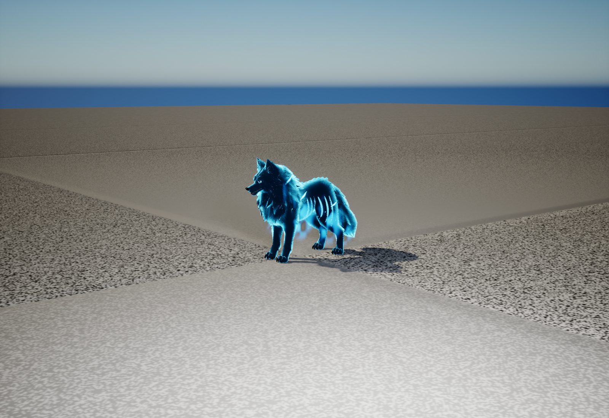
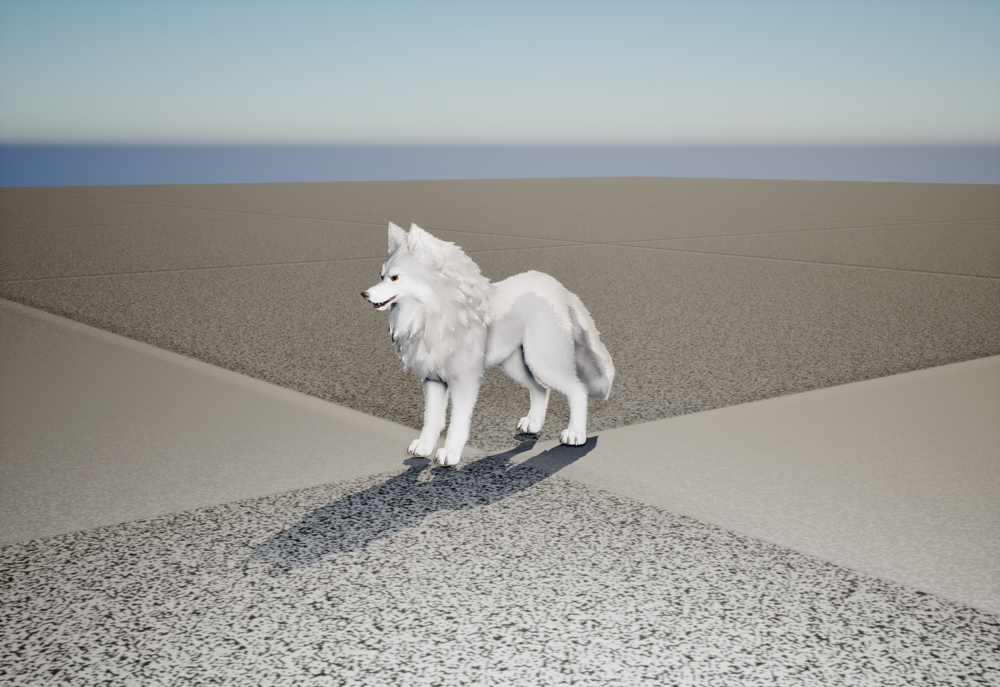
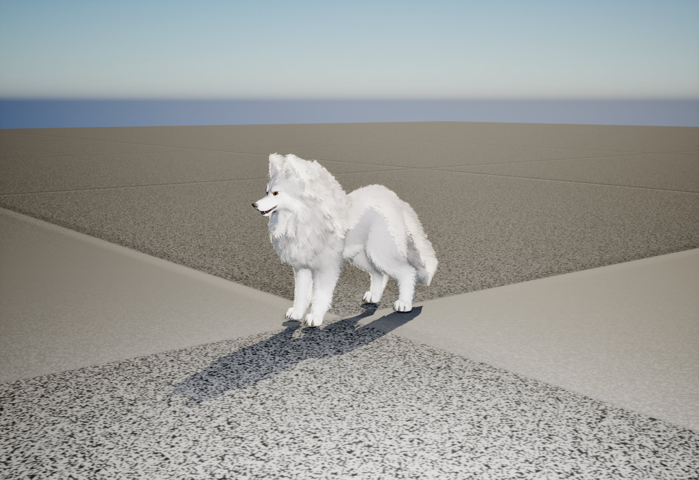
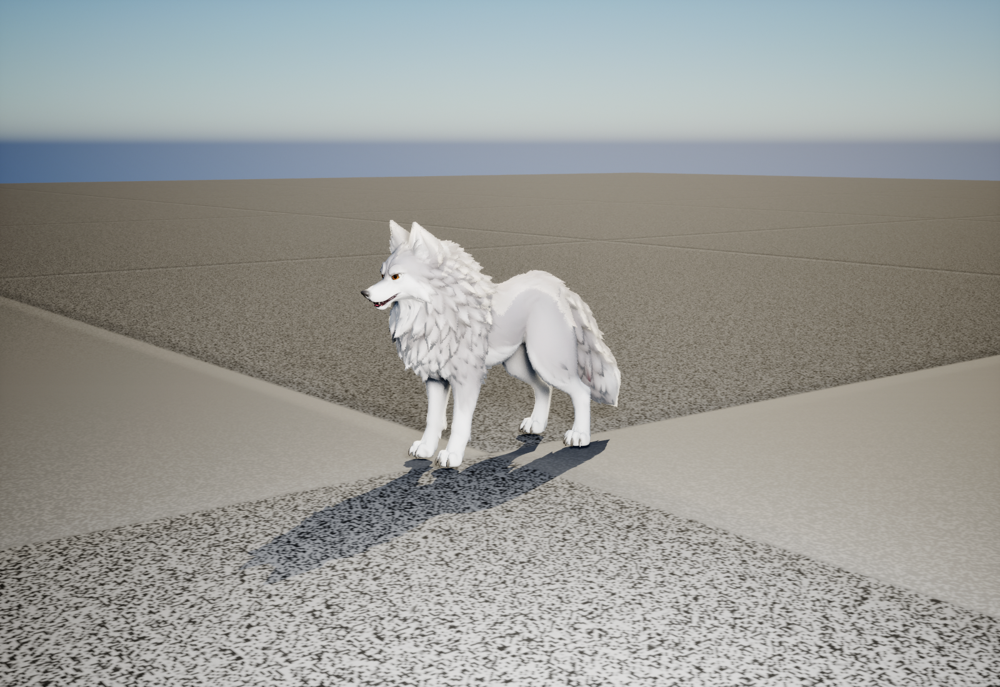

Loup
Dans ce dossier
Dans cette page
État courant · V27
Version V27 · 23 octobre 2026. Les précisions ci-dessous constituent l’état courant ; les campagnes et versions précédentes restent consultables dans le volet historique.
Le menu I est commun au solo et au multijoueur : trois places d’équipe, vingt places en réserve, portraits approuvés, niveaux, XP, PV et KO. Glisser-déposer pour déplacer ou échanger ; clic droit pour rejoindre la première case libre de l’autre espace. Équipe pleine, une nouvelle recrue rejoint la réserve. Une collection pleine refuse le recrutement sans dépenser de mana. La suppression simple ou multiple demande confirmation.
En multijoueur, le serveur valide les transferts et suppressions de la collection personnelle. Les autres joueurs ne peuvent pas déplacer vos ombres. Les alliés en réserve ne restent pas simulés sur le terrain. Le menu ne met pas la partie réseau en pause. Les identifiants, niveaux, XP et KO sont conservés dans la sauvegarde et lors de la reconnexion. Les animations de l’ours et de l’aigle et les matériaux ombraux utilisent les mêmes assets que le solo.
Organisation, captures et validation V27 · Gestion des ombres
Guide détaillé et historique antérieur à V27
RÉFÉRENCE · 16 OCTOBRE 2026
Les loups — guide actuel
Ressources, IA solo et réseau, combat, recrutement, vagues, réglages et entretien.
21 octobre — Le portail sombre se fissure et se sépare · V20
La surface noire/bleu nuit reste la même depuis l’ouverture. Des fissures lumineuses la traversent, puis ses 20 morceaux sombres s’écartent et se dissipent en 0,7 seconde. Les petits éclats cyan accompagnent désormais la fracture du disque lui-même. Le véritable allié est libéré au moment habituel, vers 6,2 secondes.
Un seul maillage de 594 triangles réunit les vingt cellules et leurs fines tranches. Leur mouvement utilise l’horloge du matériau sur le GPU, sans Tick de déplacement sur le processeur, simulation physique, collision, ombre ni ray tracing. La même surface est présente dans les trois rituels dès leur début ; seul leur émetteur sombre Portal001 est désactivé sur chaque composant. Le système Niagara et son matériau d’origine restent conservés, ainsi que la préparation au chargement.
75 contrôles réussis sur 75 : trois vraies morts et réanimations solo, sans résultat forcé, sans pause et sans capture pendant ce banc logique. Toutes les images observées de fermeture contrôlent les proxies cachés, le véritable allié visible, la continuité de surface et d’horloge, l’arrêt du Tick et la suppression de l’effet. Les 12 PNG natifs de 1 280 × 688 pixels viennent d’un banc distinct, figé brièvement pour photographier les quatre étapes. Ils ont tous été inspectés.
Solo seulement. Le rituel réseau utilise un effet distinct, inchangé ici. Ce contrôle ne mesure pas les FPS globaux et ne constitue pas une validation multijoueur. Les coûts, probabilités et limites d’alliés sont conservés ; aucune source C++ ni carte n’a été modifiée pour cette fermeture.
Voir les trois séquences actuelles · Preuve logique sans pause · Captures séparées · Copies récupérables avant modification.
Historique remplacé : la V19 ajoutait les fissures et les 32 petits éclats cyan, mais retirait le disque sombre au départ de la fermeture. La V20 corrige précisément cette surface. Les images V19 et ses 60 contrôles datés sont conservés comme historique.
Changements de direction · 19 octobre 2026
Les rotations de poursuite, d’approche au corps à corps, de recul et d’attaque mobile passent par une interpolation commune : la vitesse angulaire est plafonnée, puis diminue à l’approche de la direction visée. Un seul ajustement explicite est appliqué par image pour éviter l’addition de plusieurs corrections. La navigation utilise l’accélération plutôt qu’un départ instantané.
Le plafond général est de 240°/s, avec 170°/s maximum en recul. Les limites plus basses déjà utilisées pendant les attaques sont conservées ; l’ours utilise des valeurs propres à son poids. Le contrôle isolé du loup à l’arrêt mesure un maximum de 220°/s et un retour précis vers une cible située derrière lui. Ce contrôle ne certifie pas chaque combinaison de pente, d’esquive et de combat en groupe.
Rapport de rotation · Combat de l’ours. Fonctions concernées dans BP_IA_Loup : GroundFaceSmooth, FaceWolfTarget, UpdateWolfMeleeMovement, UpdateWolfRetreatFacing, UpdateWolfMovingAttack et EngagerCibleLoup. Ce lot porte sur les Blueprints solo.
Pelage V5 de l’Ombre céleste — 19 octobre 2026
Le loup Ombre céleste reçoit le pelage court V5. Ses couleurs, ses lueurs et ses ornements restent conservés ; le duvet accompagne sa formation et sa disparition.
Les deux invocations alliées du solo, classique et rituelle, utilisent ce pelage. Lors du rappel et du redéploiement, le duvet se dissout et réapparaît avec le corps.
Comparer le pelage avant/après à distance de jeu et en vue d’ensemble.

Portée, conservation et contrôles
Cette extension couvre les cinq Blueprints ci-dessous. Elle ne porte pas sur les autres galeries historiques, le loup multijoueur ou l’ours, qui ne possède pas encore de nécromancie.
| Usage | Blueprint |
|---|---|
| Variante IA Ombre céleste | BP_IA_Loup_OmbreCeleste |
| Aperçu Ombre céleste | BP_LoupOmbreCeleste_Apercu |
| Allié — invocation classique | BP_LoupAllie_OmbreCeleste |
| Allié — invocation rituelle | BP_LoupAllie_InvocationRituelle |
| Loup en formation pendant le rituel | BP_InvocationRituelle |
Le maillage SK_Pelage_Loup optimisé V5 et ses trois niveaux de détail sont partagés avec les loups ordinaires. Trois matériaux dédiés reprennent les couleurs, émissions et masques d’origine. PassageDissolution suit le corps ; le rituel synchronise RituelSolZ, RituelHauteur et RituelRevelation. Le duvet n’ajoute ni collision ni géométrie ray tracing. Les corps, leurs matériaux et leurs ornements sont conservés.
20 contrôles d’installation, 46 de comparaison et 236 contrôles runtime réussis. Les deux voies de recrutement, le coût unique, le propriétaire, la disparition au rappel et le retour sont contrôlés ; vie, niveau, XP et emplacement allié sont conservés.
Installation · Aperçu · Contrôles runtime.
Le contrôle utilise les fonctions de recrutement solo, puis le rappel et le redéploiement. La sélection au clavier R et le recrutement réseau ne font pas partie de ce nouvel essai. Ces images et contrôles ne constituent pas un benchmark.
Sources et sauvegardes : Saved/CodexTools/FurNecroV5. Captures et rapports : Art/Pelage_Necromancie_V5.
Pelage V5 — 19 octobre 2026
Les loups retrouvent un pelage plus court, et un duvet fin recouvre la tête de l’ours. La géométrie est allégée en conservant les volumes du corps, les griffes et les animations.
La longueur du sous-poil est ramenée à 48 % de la V4 : environ 0,86 à 1,44 cm sur le corps et jusqu’à 1,92 cm autour du cou, avant déformation. Les mèches restent orientées ensemble et suivent les mouvements du squelette.
Un pelage de 0,75 à 1,2 cm couvre la tête, avec un duvet plus court sur les oreilles. Les yeux, le museau et les griffes restent dégagés. Un motif plus fin adoucit le front et le raccord au pelage du corps.
Comparer V4 et V5 à distance de jeu, avec détails de la tête et des griffes.

La référence de renardeau guide le duvet court, doux et continu. Le but est de retrouver ce caractère sur l’ours et les loups ; les comparaisons montrent leurs modèles animés dans Unreal et leur éclairage de jeu.
Fluidité et message jaune
Le budget de géométrie ray tracing est respecté après correction : demande maximale de 203,68 MiB dans la comparaison contrôlée, puis 216,96 MiB lors du lancement normal avec menu puis solo, pour un budget conservé de 400 MiB. La V4 atteignait 473,79 MiB dans la comparaison. Une observation directe du menu NEXUS dans l’éditeur utilisateur confirme également l’absence de message jaune à ce moment. Les compteurs moteur sont archivés ; cette observation visuelle ne dispose pas d’une capture durable.
Dans une scène contrôlée affichant dix animaux animés, le temps GPU médian moyen des deux répétitions passe de 6.33 ms avec V4 à 4.05 ms avec V5, soit environ 36 % de temps GPU en moins. La cadence observée reste proche de 8,33 ms par image ; aucun gain de FPS en jeu normal n’est revendiqué.
Diagnostic, protocole et preuves. Les mesures comparatives sont distinctes des comptages de géométrie.
Sources, conservation et contrôles
127 contrôles runtime, 18 d’assets et 38 d’activation. 99 contrôles de génération et 90 contrôles des exports FBX. Vingt captures, dix comparaisons. Sources : Art/Pelage_Optimise_V5 ; scripts et sauvegardes : Saved/CodexTools/FurOptimiseeV5.
La V4 est conservée dans Art/Pelage_Duvet_V4. Les retouches des griffes, les alertes et la caméra sont conservées. Cette passe porte sur les quatre Blueprints ordinaires du solo ; le loup réseau reste en pelage de surface V1.
Runtime · Activation · Captures.
Historique : duvet V4, remplacé par V5
Florian a demandé une nouvelle passe : poils du loup trop longs, tête de l’ours insuffisamment couverte et coût de rendu à réduire. La V5 est maintenant intégrée ; la V4 reste récupérable avec ses sources et captures.
Après rejet de la V3 jugée trop discrète, la nouvelle passe reprend la présence du pelage à distance de jeu et son volume. La référence fournie par Florian reste la fourrure douce et stylisée d’Aniimo. Le critère principal est la lecture du duvet sur la silhouette et le corps sans zoomer, plutôt qu’un nombre de brins.
Comparer V3 et V4, avec rappel de V2 à distance de jeu.

Lors de cette étape, la V4 équipait les quatre Blueprints ordinaires du solo : ours et loups blanc, gris, noir. Le loup natif multijoueur garde le pelage de surface V1 ; les formes nécromantiques spéciales sont hors de ce lot. Les corrections des pattes et des griffes de l’ours, les alertes « ! » et la caméra de la passe précédente sont conservées.
Sur les loups, le raccord du cou et de la queue utilise une direction de fibres lissée pour réduire les cassures anguleuses ; le masque du sous-poil laisse mieux apparaître les mèches. Cette régularisation concerne le pelage ajouté, avec protection des oreilles, du visage et des pattes. Le corps original reste conservé.
Comparaison et vérifications
131 contrôles Unreal réussis. Vingt-quatre captures pour huit vues en V2, V3 et V4, dont huit comparaisons V3/V4 aux mêmes poses, caméras et éclairages, sur le même corps corrigé de l’ours. Ces résultats techniques ne remplacent pas le jugement visuel de Florian et ne constituent ni un benchmark ni un test réseau.
Contrôles V4 · Comparaisons · Intégration · Géométrie ours · Géométrie loups.
Sources finales : ours via build.py -- Ours ; loups via build_loup_smooth.py puis adopt_smooth.py. La variante lissée a été adoptée dans les fichiers racine de Art/Pelage_Duvet_V4. Le prototype initial du loup reste une archive. Sources : Art/Pelage_Duvet_V4 ; scripts et sauvegardes : Saved/CodexTools/FurAniimoV4. Référence Aniimo, présentation officielle : inspiration artistique uniquement, sans supposer sa technique interne.
101 contrôles sur quatre poses de charge de l’ours et quatre poses de galop du loup blanc, à caméra fixe. Les captures vérifient notamment le suivi du squelette par le pelage et ses limites d’affichage. Il s’agit de poses échantillonnées, pas d’une mesure de performances ou d’une vidéo du combat complet.
Réglages finaux : le gris conserve MSS_NONE pour éviter le blanchiment, le blanc utilise seul MSS_TWO_SIDED_WRAP. Après adoption des sources, smooth_final.py réimporte explicitement le loup. L’activation passe par activate.py, puis refresh_instances.py pour reconstruire les instances placées à partir de la carte propre. Le script bloque le rechargement si une carte contient des modifications non enregistrées. Activation vérifiée : quatre Blueprints, dix animaux placés.
Historique : V3 écartée, duvet trop discret
Florian a écarté ce rendu : les poils restaient trop discrets à distance de jeu. Les essais V3 et V4 sont historiques ; la V5 ci-dessus est actuellement intégrée. Les corrections des griffes de l’ours restent conservées.
Le retour de Florian sur l’aspect « poils de brosse » de la V2 conduit à une nouvelle passe : sous-poil plus continu, brins courbés et couchés, variations de longueur et raccord plus doux avec les mèches sculptées. L’objectif visuel reste une fourrure stylisée agréable à distance de jeu, inspirée de sa capture Aniimo.
Comparer la V2 et la V3 à distance de jeu.

Intégration sur l’ours et les trois Blueprints ordinaires du solo (loups blanc, gris et noir). Le loup natif multijoueur conserve la V1 de surface. Les variantes nécromantiques spéciales restent hors de cette passe.
Construction, conservation et validation
Le composant PelageVolume combine des couches masquées pour le sous-poil et des brins géométriques courbés, attachés au squelette du corps. Trois niveaux de détail : 16 / 8 / 4 couches ; ours 24 000 / 8 000 / 3 000 brins ; loups 15 000 / 5 000 / 1 875. Pas de simulation physique indépendante.
79 contrôles Unreal, 19 contrôles de conservation de la source ours et 5 contrôles du réimport réussis. Huit paires d’images à pose, caméra et éclairage identiques : « Avant » est la V2 en volume, « Après » la V3, sur le corps déjà corrigé. Les griffes disposent d’une comparaison Blender séparée. Ces contrôles ne constituent ni un benchmark ni un test multijoueur.
Contrôles Unreal · Images · Source ours · Réimport ours · Intégration · Géométrie ours · Géométrie loups.
Historique : premiers poils en volume V2
Suite au retour de Florian, le détail de texture V1 est complété par de vrais brins géométriques, courts et effilés. La direction visuelle est un pelage doux et dense inspiré de sa capture d’Aniimo ; la technique utilisée ici ne prétend pas reproduire celle du jeu de référence.
Le composant PelageVolume suit le squelette du corps par Leader Pose. Les maillages de corps, morphs du visage, animations et collisions restent conservés. Les yeux, museaux et griffes sont exclus du pelage ajouté. L’ours et les trois loups ordinaires sont concernés ; les formes nécromantiques spéciales ne changent pas.
Densité proche : 180 000 brins pour l’ours, 120 000 pour le loup. Deux niveaux éloignés utilisent 25 % puis 6,25 % de cette géométrie. Les poils n’ont pas de simulation physique indépendante. Les vérifications de pose et les captures ne remplacent pas un benchmark avec plusieurs créatures.
Voir la fourrure à distance normale · Vérifications dans Unreal · Géométrie · Intégration · Densité à distance.
La fourrure V2 équipait les quatre Blueprints ordinaires du solo à cette étape. Elle est conservée comme archive ; la V5 est actuellement intégrée. Le loup natif multijoueur garde le pelage de surface V1.
Pelage de surface V1
Ajout du 18 octobre 2026 : un détail de fibres irrégulières module la couleur, la rugosité et le relief apparent du pelage. Les coordonnées suivent la peau animée. Le détail trop fin est atténué selon sa taille à l’écran.
L’ours reçoit un matériau de pelage distinct avec une couche de duvet ; les yeux, la truffe et les griffes conservent leurs matériaux. Les loups blanc, gris et noir reçoivent le même principe, avec un grain plus fin et leur mouvement de mèches existant. Les formes nécromantiques spéciales ne sont pas modifiées par ce lot.
Il s’agit d’un effet de surface : le maillage, les squelettes, les morphs et la silhouette sculptée sont conservés. Les paramètres Pelage_Densite, Pelage_Contraste et Pelage_Relief permettent l’ajustement ; Pelage_Duvet règle le duvet de l’ours.
Comparer avant / après · Vérifications · Source de l’effet · Matériaux actifs et versions précédentes.
Ce qui a été vérifié et corrigé
Le guide historique du 27 septembre ne correspondait plus entièrement au jeu. Le relevé actuel porte sur le parent Blueprint, les trois variantes, leurs matériaux, le Blend Space, les séquences d’animation et les loups placés dans la map ouverte.
| Ancienne indication | État relevé le 16 octobre |
|---|---|
| Map principale L_MondePrincipal | Le solo se déroule dans L_Base_Nexus ; le multijoueur utilise L_Hub_Multijoueur puis L_Quatre_Forts. |
| 3 loups dans l’ancien monde | 9 loups placés dans L_Base_Nexus, soit 3 de chaque couleur, à l’échelle 1,2. Ce décompte ne comprend pas les apparitions des vagues. |
| 86 ressources hors Corbeille | 176 entrées dans le dossier Loup hors sous-dossiers Corbeille. Ce nombre comprend la compatibilité, et ne signifie pas autant de ressources actives. |
| Poursuite 390 cm/s | 330 cm/s dans les quatre classes auditées. |
| Patrouille 90 cm/s | 75 cm/s ; approche rapprochée 260, contournement 240, retrait 300 et petits ajustements 90 cm/s. |
| Espacement des attaques de meute 1,1 s | 0,65 s dans le parent et les variantes. |
Trois systèmes à ne pas confondre
| Contexte | Pilotage | À modifier |
|---|---|---|
| Loup sauvage du solo | BP_IA_Loup et ses variantes : perception, poursuite, tactique de meute, esquives, terrain, visage. | Blueprint parent pour le comportement partagé ; variante pour son rendu. |
| Loup d’une vague solo | AvatarWaveDirector / AvatarWaveEnemyComponent : priorité aux objectifs de base, rôles et progression de niveau. | AvatarWaves.cpp et ses paramètres ; vérifier les valeurs appliquées au spawn. |
| Loup du multijoueur | AAvatarNetworkMob, contrôlé par le serveur, avec état et mouvement répliqués. | AvatarNetworkMobs.cpp. Il partage des ressources visuelles, mais ne reprend pas automatiquement tous les graphes tactiques du Blueprint solo. |
Où trouver les ressources actuelles
| Usage | Chemin |
|---|---|
| Racine | /Game/ElemntsForGame/Mobs/Loup |
| Blanc | IA/Variantes/BP_IA_LoupV3_Blanc |
| Gris foncé | IA/Variantes/BP_IA_LoupV3_GrisFonce |
| Noir | IA/Variantes/BP_IA_LoupV3_Noir |
| Comportement solo | IA/BP_IA_Loup |
| Pose | IA/Animation/ABP_WolfV3_AI |
| Allures | IA/Animation/BS_WolfV3_AI |
| Modèle | Modeles/SK_Loup_VisageVivant |
| Squelette | Modeles/Squelette/SK_WolfV3_Skeleton |
| Physique de mort | Modeles/Physique/PHYS_WolfV3_Death |
Les chemins courts sont relatifs à la racine Loup. Le dossier s’appelle réellement ElemntsForGame. Placer les variantes dans le niveau, plutôt que le parent : ce dernier conserve encore des références de compatibilité.
Modèle, couleurs et visage
Les variantes blanche, gris foncé et noire utilisent le même modèle et le même squelette. Les différences de pelage viennent des matériaux. Les défauts de classe ne leur attribuent pas une difficulté différente selon la couleur.
Le parent a WolfFacialEnabled=False, mais les trois variantes ont True : lire seulement le parent ferait conclure à tort que leur visage est désactivé. Conserver les morphs, les matériaux de bouche, les iris et l’ordre des slots lors d’une réimportation.
| Paramètre du parent Blueprint | Valeur relevée |
|---|---|
WolfBlinkIntervalMin | 2.2 |
WolfBlinkIntervalMax | 5.2 |
WolfTongueAmount | 1.0 |
Les correspondances exactes de slots, meshes et Anim Class des quatre classes figurent dans le relevé joint. La couleur de l’iris d’alerte, le clignement et la fermeture des yeux à la mort sont des comportements séparés du simple changement de pelage.
Locomotion et cadence
| Paramètre du parent Blueprint | Valeur relevée |
|---|---|
WolfPatrolSpeed | 75.0 |
WolfChaseSpeed | 330.0 |
WolfMeleeSpeed | 260.0 |
WolfOrbitSpeed | 240.0 |
WolfDisengageSpeed | 300.0 |
WolfCloseRepositionSpeed | 90.0 |
Échantillons actuels du Blend Space, relus directement dans Unreal :
| Position de vitesse | Séquence | Multiplicateur de lecture |
|---|---|---|
| 0.0 | A_WolfV3_Idle | 1.0 |
| 75.0 | A_WolfV3_Walk_Coherent | 0.949999988079071 |
| 120.0 | A_WolfV3_WalkFast_Coherent | 1.0 |
| 190.0 | A_WolfV3_Transition_Coherent | 1.0 |
| 270.0 | A_WolfV3_Canter_Coherent | 1.0499999523162842 |
| 330.0 | A_WolfV3_Run_Galop | 1.0800000429153442 |
| 450.0 | A_WolfV3_Run_Galop | 1.1799999475479126 |
La vitesse de déplacement et la cadence de l’animation sont deux réglages distincts. Pour corriger du patinage, vérifier la distance réellement parcourue pendant une foulée et les points du Blend Space. Changer uniquement la durée du clip peut empirer les appuis. Une animation d’attaque corps entier peut prendre temporairement la priorité sur les corrections de terrain.
Perception, poursuite et meute en solo
Le parent Blueprint acquiert une cible, passe par l’alerte puis poursuit le joueur. Il combine approche, attaques, retrait, changement d’angle et attente en groupe. Les fonctions de repère sont AcquireWolfTarget, UpdateWolfPursuit, UpdateWolfCombat, CanWolfTakePackTurn et UpdateWolfPackTacticsV2.
| Paramètre du parent Blueprint | Valeur relevée |
|---|---|
WolfAcquireDistance | 1500.0 |
WolfLoseTargetDistance | 2000.0 |
WolfAlertDuration | 1.5 |
WolfPackMaxAttackers | 2.0 |
WolfPackAttackStagger | 0.65 |
WolfDodgeChance | 0.42 |
WolfDodgeCooldownMin | 3.5 |
WolfDodgeCooldownMax | 5.5 |
Les arcs de contournement, la réservation des sorties, la gestion de proximité et le passage en couloir appartiennent au comportement Blueprint. Les anciennes recettes restent consultables dans les archives ; leurs résultats datés ne constituent pas un nouveau test de terrain du 16 octobre.
Attaques, dégâts et contact
| Paramètre du parent Blueprint | Valeur relevée |
|---|---|
MaxHealth | 100.0 |
ClawDamage | 10.0 |
BiteDamage | 25.0 |
ClawInterval | 1.6 |
BiteCooldown | 10.0 |
WolfClawAdvanceSpeed | 65.0 |
WolfBiteAdvanceSpeed | 90.0 |
Les ressources comprennent une griffe droite, une griffe gauche, une morsure et des esquives. Un effet visible ne prouve pas un impact : la fenêtre de frappe, la portée, la différence de hauteur, la ligne de vue et l’état vivant interviennent également.
Dans le chemin réseau, le serveur commence l’attaque à environ 145 cm, contrôle le contact jusqu’à 190 cm et une différence verticale de 130 cm, puis applique l’impact à 42 % de la durée de l’attaque. Un obstacle peut empêcher les dégâts même lorsque la traînée reste visible. Ces valeurs ne remplacent pas les contrôles de contact du Blueprint solo.
Sources : AvatarNetworkMobs.cpp et le Blueprint parent. Les durées des séquences chargées sont inventoriées dans le relevé, sans déduire la durée d’un montage uniquement de son nom.
Pentes, escaliers et appuis
Les fonctions ProbeWolfTerrain, UpdateWolfTerrain et UpdateWolfFootFL/FR/HL/HR traitent le terrain dans le chemin solo. Le corps s’incline de manière limitée et les pieds reçoivent des corrections distinctes. Le franchissement utilise notamment TryWolfObstacleJump, une vérification d’arc et des limites de hauteur/distance.
| Paramètre du parent Blueprint | Valeur relevée |
|---|---|
WolfJumpMaxHeight | 55.0 |
WolfJumpProbeDistance | 130.0 |
WolfJumpUpSpeed | 360.0 |
WolfJumpMaxDistance | 240.0 |
WolfJumpHorizontalSpeedLimit | 350.0 |
WolfJumpCooldown | 1.5 |
En cas de blocage : regarder d’abord le NavMesh, les collisions du rempart et la capsule. Une retouche visuelle du pied ne rend pas un escalier navigable. Tester montée, descente, travers de pente, couloir, obstacle et attaque sur un joueur plus haut.
Mort, recrutement et panneau rouge
La mort interrompt le combat et déclenche la pose de chute. Le parent historique garde CorpseLifetimeAfterDeath=3 : il ne faut pas interpréter cette seule variable comme la durée actuelle d’une fenêtre de recrutement. Les composants de recrutement et le chemin réseau ont leurs propres états et délais.
En multijoueur, seul le joueur ayant porté le coup fatal peut voir la proposition active et recruter. La fenêtre est de 35 secondes, à moins de 450 cm, pour 25 mana, avec 50 % de réussite et au maximum 3 alliés. La tentative est consommée avant le tirage, afin que plusieurs requêtes ne relancent pas le hasard ou ne débitent pas plusieurs fois la mana.
Un panneau d’échec rouge est purement visuel : il ne doit ni devenir une cible de recrutement ni masquer une interaction valide. La touche R doit agir sur la cible active sélectionnée. Les tests du 16 octobre vérifient l’exclusivité du tueur, le refus d’un autre joueur et les requêtes concurrentes ; ils ne remplacent pas une nouvelle inspection de toutes les superpositions de panneaux en solo.
Alliés et reconnexion
Le propriétaire peut donner un ordre d’attaque avec F, dans la portée prévue. Un allié ne doit pas blesser son propriétaire. Lorsqu’un propriétaire se déconnecte, son allié attend au lieu d’être transféré au premier joueur disponible. Son identité persistante permet de le rattacher au retour du même compte.
La sauvegarde de l’hôte conserve notamment le propriétaire, les HP et la position des mobs, ainsi que l’état de recrutement. Un changement de pseudo n’est pas un changement d’identité Steam. Voir Multijoueur pour les sauvegardes, les limites de reprise et l’absence de migration automatique d’hôte.
Vagues et niveaux
Les vagues sont propres au solo. Pendant les essais, maintenir Verr. Maj pendant 2 secondes charge le panneau puis demande la prochaine vague. La progression de niveau utilise 1,1^(niveau−1) pour les statistiques concernées, et non une augmentation linéaire de 10 points.
La stratégie de vague combine la pression sur le joueur et les objectifs de base. Les ennemis de siège cherchent un accès et une structure attaquable ; le choix prend en compte l’accès réel, pas seulement la distance au centre d’un mur. La source de réglage est AvatarWaves.cpp. Les règles, déclencheurs, rôles et limites sont détaillés dans le guide solo.
Réseau, sommeil et coût
Les déplacements de l’IA sont calculés par le serveur, puis envoyés aux clients pertinents. Les clients n’envoient pas une seconde simulation de déplacement des loups au serveur. La fréquence nominale du mob est de 20 Hz, avec un minimum de 5 Hz ; cela ne correspond pas à la fréquence de rendu des animations.
Le sommeil lointain se déclenche lorsque les joueurs sont au-delà de 100 m pendant environ 3 secondes ; le réveil intervient à 80 m. La pertinence réseau est limitée à 120 m par connexion. L’hystérésis évite de basculer sans arrêt près de la limite. Un mob proche d’un joueur reste actif même si l’autre joueur est loin.
Le contrôle du 16 octobre couvre le sommeil, le réveil, la pertinence et la reprise du mouvement. Voir les rapports détaillés.
Ajouter une variante ou une nouvelle espèce
- Dupliquer une variante valide, conserver le modèle, l’AnimBP et le squelette compatibles.
- Créer ses matériaux dans un dossier dédié sans modifier l’ordre des slots.
- Contrôler les valeurs héritées, celles remplacées par la variante et celles remplacées sur l’instance du niveau.
- Placer la variante sur une zone navigable avec assez de place pour la capsule.
- Tester combat, réception des dégâts, mort et recrutement en solo.
- Pour le multijoueur, raccorder explicitement le type et ses ressources dans la classe réseau : copier un Blueprint solo ne suffit pas.
Pour une autre espèce, adapter perception, dimensions, locomotion, animations, portée, dégâts, contacts et mort. L’IA du loup n’est pas un contrôleur universel pour un oiseau ou un animal rampant. Le catalogue contient la fiche de nouveau mob et la procédure détaillée historique.
Retoucher le loup dans Blender
| Besoin | Source locale |
|---|---|
| Modèle avec visage | Loup_Visage_Vivant.blend |
| Variante optimisée de travail | Loup_Visage_Optimise.blend |
| Source FBX actuelle du mesh | SK_Loup_VisageVivant.fbx |
| Griffe droite | Loup_Griffe_Fluide.blend |
| Griffe gauche | Loup_Griffe_Gauche.blend |
| Esquives | Loup_Esquive_Fluide.blend |
Repartir de la source correspondant à l’asset actif, enregistrer une nouvelle révision, préserver noms des os, pose de référence, slots et morphs. Pour modifier une animation seule, importer une séquence sur le squelette existant plutôt que remplacer tout le modèle. Vérifier les trois pelages, la langue, les yeux, les quatre appuis, la physique et les timings après import.
Contrôle après chaque modification
| Essai | Résultat attendu |
|---|---|
| Repos / marche / course | Cadence cohérente, pas de pied qui glisse ni de changement brutal de tête. |
| Duel puis groupe | Un impact par coup ; sorties possibles ; aucun loup durablement bloqué. |
| Mur, pente, escalier | Pas de dégâts à travers le mur ; contact valide en dénivelé ; navigation fonctionnelle. |
| Mort puis tentative de recrutement | Fin des attaques, bon propriétaire, coût unique, panneau rouge non interactif. |
| Deux ou quatre joueurs | Même position et même état visibles ; aucune simulation de dégâts concurrente sur les clients. |
| Éloignement puis retour | Sommeil seulement quand tous les joueurs concernés sont loin, réveil à l’approche. |
| Déconnexion / reprise | Allié conservé et rendu au même propriétaire, HP restaurés selon la dernière capture. |
Le laboratoire historique est /Game/Level/L_EntrainementLoups. Il sert aux scénarios de terrain et ne constitue plus le niveau principal. Les anciens rapports de pentes, griffes et esquives sont conservés avec leurs dates dans le catalogue.
20 octobre — Équilibrage et réanimation V4
Le système d’alerte hérité ne crée plus ni ne restaure de matériau de mob sauvage sur un allié ou pendant son invocation. Les palettes nécromanciennes restent identiques avant, pendant et après le relais du rituel vers le mob contrôlé. Deux recrutements réels, ours puis loup, contrôlés image par image : aucun retour du matériau sauvage sur l’allié, cadavre source retiré et allié visible à la fin.
Validation solo : 35 contrôles réussis, deux cycles complets de l’aigle avec dégâts pendant le repos, loup touché par les griffes et contre-attaque après contournement. 1400 images de réanimation échantillonnées. Aucun benchmark FPS ni essai réseau dans ce lot. Rapports : Art/Combat_Equilibrage_V4/Validation_Finale.json. Sauvegardes récupérables : Saved/CodexTools/CombatBalanceV4/Backup. Le module natif RitualPrewarmV1 reste inchangé. Aucun exécutable distribuable créé.